Orbital
Intelligence.
Identity, design system & application standards
MIR — independent platformLXR — Liquidity X-Ray engine
ORIGINAL VECTOR MASTERS / RESPONSIVE INTERFACES / SEMANTIC TOKENS
Identity, design system & application standards
MIR — independent platformMIR turns fragmented on-chain observations into a coherent research workspace.
Help people observe liquidity, compare market signals and examine assumptions before making a decision. Give the source, timing and uncertainty as much attention as the number.
Analysts, technically curious researchers and product teams who need inspectable on-chain evidence. The interface must work for deliberate review, not imply an automated trading edge.
Preserve units, token identities and observation context. Unknown values stay unknown; a missing cost never becomes zero.
Separate the platform from its internal engine and data adapters. New modules should feel connected without competing with the primary brand.
Expose incomplete evidence and failed checks. Research and paper simulation stay distinct from financial execution.
MIR — Orbital Intelligence. A clearer view of on-chain data.
Built by WADJ Studio
Independent platform
Orbital Intelligence
Internal engine
Liquidity X-Ray
MIR leads every product and marketing context. LXR names a capability inside MIR, not a separate parent platform. WADJ appears as a small footer or credit, never as an equal-sized competing logo.
Use “LXR — Liquidity X-Ray” at first mention. Use “LXR discovery” and “LXR analysis” in navigation. Do not invent a separate LXR palette.
mir.wadj.online is a proposed subdomain only. The kit does not represent an active deployment or configure DNS. The repository remains sheiko0777/mir; this work does not authorize a GitHub commit.
Use the exact phrase “Built by WADJ Studio”. Prefer body-caption size with generous separation from the main MIR lockup.
A connection is useful when it reveals something.
The historical Mir station demonstrated how independent engineering modules could form a coherent working system. MIR borrows that principle of docking, connection and careful observation. It does not adopt a political identity or recreate a historic insignia.
The two structural arms establish balance. The negative-space opening gives the mark its distinctive docking logic. A small red connector makes the meeting point visible without becoming an aggressive financial signal.
Warm ivory replaces sterile white. Navy creates a quiet operating field. Blueprint linework suggests construction and precision. Space imagery stays in marketing, while data surfaces remain clear.
Say “Observed at block…” and “Cost estimate unavailable”. Avoid “Guaranteed profit”, “Risk-free”, “Winning opportunity” or invented scale claims.
Use plain verbs: observe, compare, inspect, review and simulate. Describe the next useful action. Do not turn ordinary states into launch jargon or imply urgency around a token.
Prefer: “Price difference observed. Gas and token checks are incomplete.”
Avoid: “Execute this high-confidence winner now.”
رؤية أوضح للبيانات. المصدر ظاهر، والمجهول يفضل مجهول.
Master viewBox: 0 0 128 112. Structural arms use straight, filled polygons. They are not expanded font glyphs, traced pixels or a space-station silhouette. All master files are transparent and contain no linked bitmap.
The red quadrilateral uses points (64,52), (81,63), (64,75), (47,63). The gap between the arms and connector is intentional; never close it or thicken it with a stroke.
Left upper arm: (4,4), (56,36), (56,56), (4,24). Left lower arm: (4,28), (32,45), (32,94), (4,110). Right arms mirror across x=64.
Scale the supplied geometry uniformly. Use the optical micro master at 16–24 px. Do not regenerate this logo with an image model.
STACKED / SHORT FORMATSThe MIR wordmark is bespoke path lettering, with a shared diagonal rhythm and a rounded structural R. Keep it coordinated with the symbol. Do not typeset “MIR” in Space Grotesk as a substitute logo.
The LXR wordmark inherits the same structural treatment. X receives the red accent in color versions. Use LXR smaller than MIR in platform hierarchy; avoid a full-size dual-brand header.
Define x = 16 master units, one eighth of the symbol viewBox width. Reserve at least x beyond the visible mark or lockup bounds. On an 80 px horizontal lockup, x scales to 11.4 px. More space is preferred.
Symbol: 16 px minimum using the micro master; preferred regular icon size is 32 px or larger. MIR wordmark: 72 px wide minimum. Horizontal lockup: 120 px wide minimum. The stacked lockup needs 80 px width.
Symbol: 6 mm wide; wordmark: 18 mm wide; horizontal lockup: 30 mm wide. Test the final substrate, especially ivory on absorbent uncoated stock.
The 16-unit micro mark simplifies arm widths and enlarges the docking connector. It is an approved optical variant, not a redesign. At tiny sizes, use no tagline.
Do not stretch, skew, rotate, outline or apply a bevel. Do not add gradients, glows, shadows or textures inside the logo. Do not make the docking element larger for emphasis or recolor it as a risk status.
Keep a calm, high-contrast field behind the complete mark. On photography, use a quiet crop or a solid navy holding area. Never place the logo over an active data chart or textured cloud edge.
Do not append a literal station silhouette or use political flags, historic official emblems, propaganda motifs or a generic bullseye. The docking geometry is the identity.
File suffix dark means “for a dark background”; light means “for a light background”. Mono-navy and mono-white remove the red accent for one-ink or reverse reproduction. Never flatten a white box behind a master.
#0B1E36Primary field#F1E6D6Warm neutral#C62828Docking / action#00C8DBData / interaction#8A969EStructural neutralBuild most compositions with Navy and Ivory. Red is a controlled point of connection or primary action; Cyan directs attention to data and interaction. Gray supports dividers and nonessential structural detail. Avoid decorative color competition.
Ivory is the main canvas, with pale warm cards and navy text. Use a darker cyan-derived interactive token (#006B75) for readable links and focus outlines. Do not use raw Signal Cyan for small text on Ivory.
Space Navy anchors the identity. The workspace profile uses deeper ink surfaces with lighter cards for hierarchy. Ivory is primary text. Muted text and borders use tested semantic derivatives rather than low-opacity white.
All SVG, PNG, WebP and web tokens use sRGB hex values. No unverified CMYK or spot-color match is implied. For print, proof with the printer’s ICC profile before converting these masters.
| Pair | Contrast | Use | Text decision |
|---|---|---|---|
| Ivory / Navy | 13.59:1 | Text | AA normal |
| Navy / Ivory | 13.59:1 | Text | AA normal |
| Ivory / Mission Red | 4.56:1 | Button text | AA normal |
| Dark muted / Navy | 8.63:1 | Secondary text | AA normal |
| Light muted / Ivory | 5.28:1 | Secondary text | AA normal |
| Cyan / Navy | 8.21:1 | Data / focus | AA normal |
| Dark cyan / Ivory | 5.07:1 | Link / focus | AA normal |
| Brand Red / Navy | 2.98:1 | Decoration only | Not normal text |
| Raw Cyan / Ivory | 1.66:1 | Decoration only | Not normal text |
| Gray / Ivory | 2.45:1 | Decoration only | Not normal text |
Target WCAG 2.2 AA: 4.5:1 for normal text and 3:1 for large text. Interactive boundaries and meaningful graphics need 3:1 against adjacent colors. Logo marks are not body-text tokens. These are calculated token-pair checks, not a blanket accessibility certification.
Use text labels and a shape with every financial or evidence status. Unknown = neutral question mark; review = amber exclamation; blocked = separate negative color and cross. Cyan links underline on hover/focus. Keep visible 3 px focus rings, reduced-motion support and keyboard-operable dialogs.
Display, headlines and section titles. Regular for measured statements; Bold for hierarchy. Default heading tracking −0.035em. The logo itself uses custom outlined lettering, not this typeface.
Body, inputs, tables and navigation. Use 400–700 weights with tabular numerals for aligned amounts. Body default is 16 px / 1.6; compact tables need high contrast and clear row spacing.
Use Noto Sans Arabic for Arabic content and natural RTL reading order. Keep token addresses and numeric units LTR within RTL copy. Do not manually reverse Arabic strings.
مير — ذكاء مداري، وقراءة دقيقة للبيانات.
The fonts folder contains unmodified TTF binaries, CSS declarations and each family’s SIL OFL 1.1 license. Install those files before editing SVG templates or Figma. Host them locally with font-display: swap; retain the OFL notices with redistribution. Do not sell fonts by themselves or change reserved names.
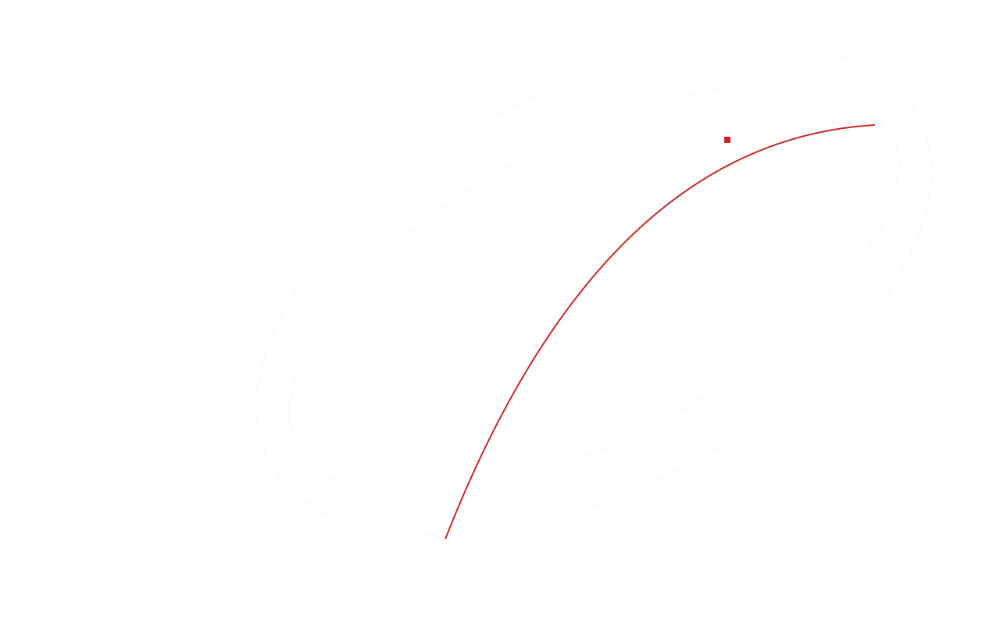
ORBITAL GEOMETRY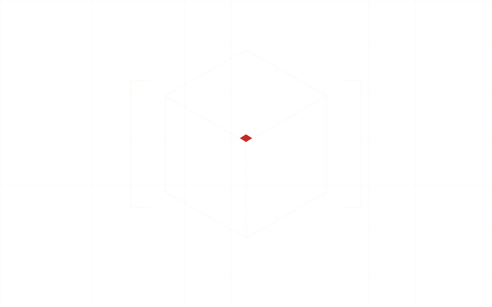
MODULAR BLUEPRINT
GRAPH EDGES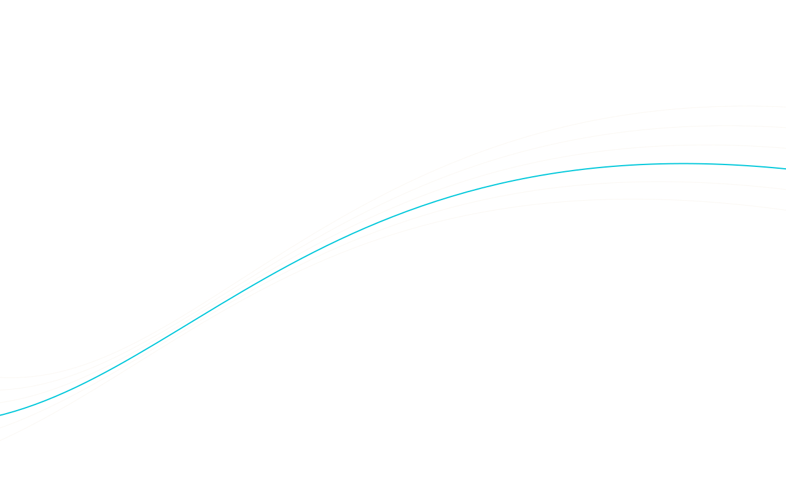
DATA TRAJECTORIESUse long, off-center elliptical arcs rather than a concentric target. Place docking connectors sparingly. Blueprint lines describe modular construction; graph edges suggest relationships. SVG versions stay editable and work at any resolution.
Keep motifs behind content, with restrained contrast and a quiet text zone. Do not put a photograph, moving orbit or dense engineering grid behind a table. Prefer one motif family per composition; reserve cinematic imagery for selected marketing sections.
Original 24 × 24 SVGs use a 1.5 px stroke, round caps and round joins. Render at 16–24 px for interface controls and pair with a label when meaning is ambiguous. The risk icon describes evidence review, not a safety guarantee.
Touch controls target 44 × 44 CSS px where possible; dense row actions keep a visible text label and generous separation within the row. Every icon-only action needs an accessible name.
Base unit: 4 px. Preferred spacing steps: 4, 8, 12, 16, 24, 32, 48, 64 and 96. Use 4 px radii on controls, 8 px on dialogs and 12 px on larger illustrations. Avoid rounded pills for every value.
Default border 1 px; focus 3 px. Use a 2 px chart line and different dash patterns. Reserve shadows for raised menus and dialogs; ordinary data groups rely on spacing and borders.
Observed data is not a trading instruction.
Observed data is not a trading instruction.
The package includes native web components for the brand lockup, metrics, evidence status and empty state. Native buttons, selects and dialog elements preserve browser semantics. Theme switching, search, evidence filtering, dialogs and sample export are functional local interactions. Mock sample values must never be silently reused on live routes.
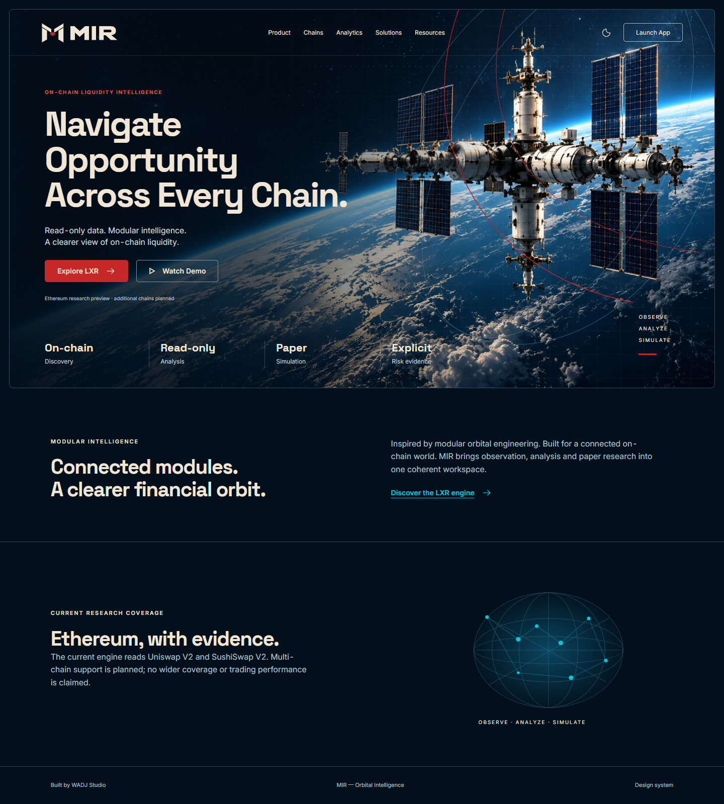
The generated Earth-limb image is used in the hero, with quiet negative space for headline text. The photography is an original AI-generated marketing asset, not documentary NASA imagery or a depiction of a real MIR mission.
The platform name leads. The headline explains clarity of observation. A primary red action opens LXR; a secondary action opens the sample workspace. WADJ stays in the footer.
No user counts, chain coverage totals, returns or success-rate claims are invented. The page describes research capabilities and labels its workspace as an illustrative preview.
The same source page adapts to narrow screens. The hero keeps readable contrast, wraps its actions as needed and reduces navigation; data views use separate clean surfaces.
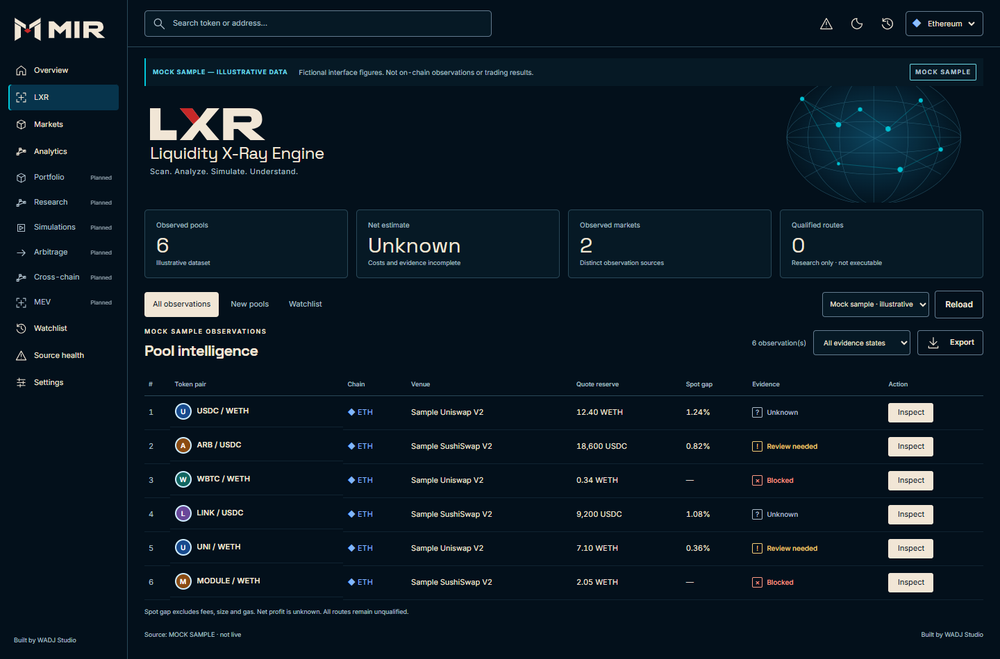
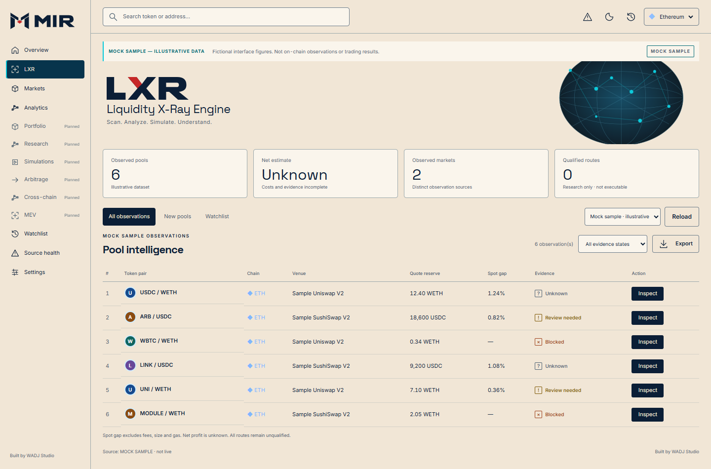
Navigation, observation context and a small set of summary metrics establish orientation. A compact observation table keeps source context and evidence states visible. Tables use stable units and explicit evidence states.
The sample banner remains prominent in both themes. Search and evidence filters operate locally. “Inspect” opens a labeled evidence dialog; it does not submit a trade. All sample routes remain unqualified. Full-resolution PNGs are supplied separately.
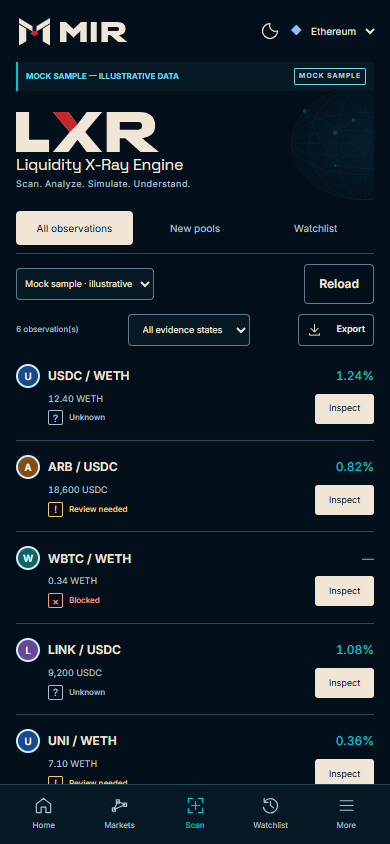


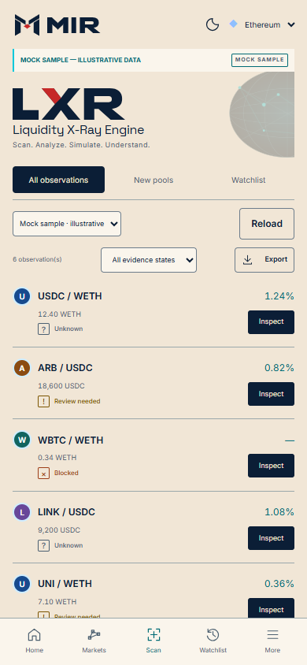
At narrow widths, tables become labeled observation cards with the same data and actions. Keep the sample-data notice, evidence state and source context. The package includes both viewport concepts and full-page mobile captures; no horizontal page scrolling is required at 320 or 390 px.

LXR uses a custom wordmark with a small red docking segment in the X. It inherits the platform palette, type scale and status colors. MIR remains the frame of reference in navigation.
A newly registered pool is not proof of a newly deployed or safe token. The working engine records factory entries, first-seen observations and missing evidence separately. UI copy must preserve those distinctions.
A spot gap is not net profit. Fees, price impact, gas and uncertainty belong in the explanation. Never show a positive color when net is unknown; use a neutral unknown state with an explicit reason.
Simulation results must be labeled hypothetical, with assumptions attached. This identity kit adds no wallet custody, approvals or autonomous execution.
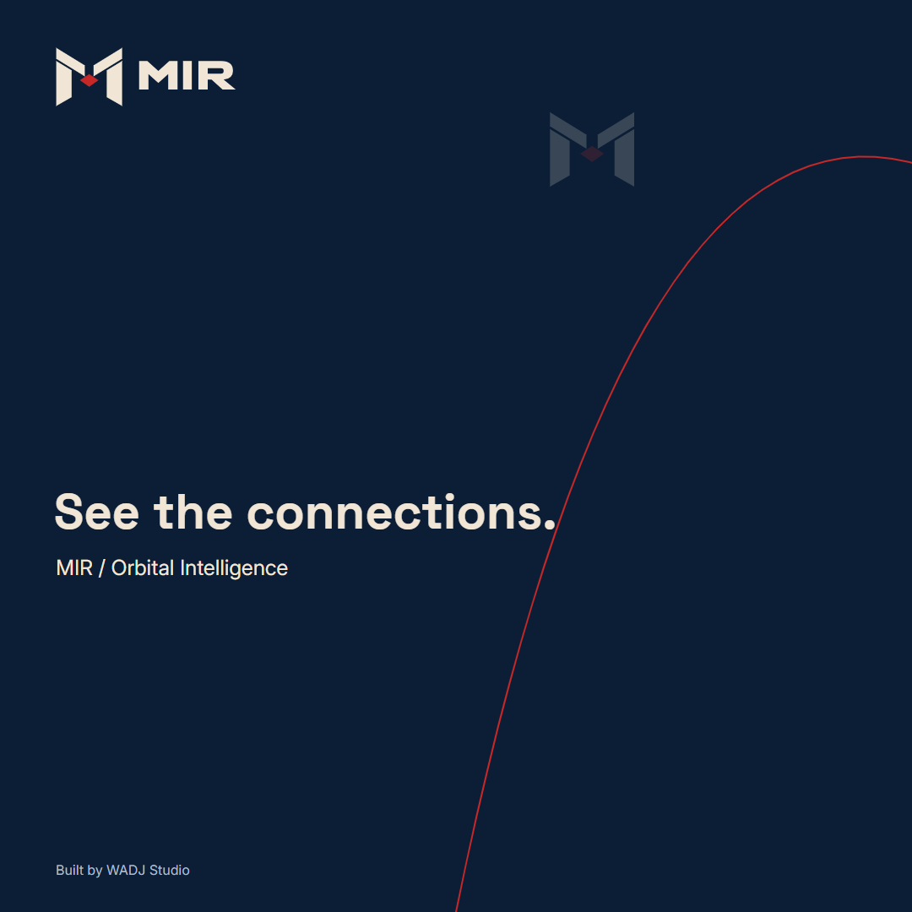
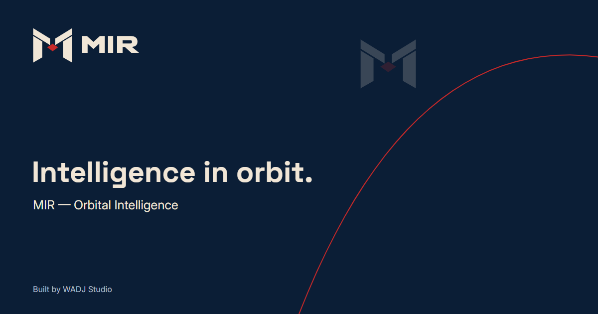
Square social: 1080 × 1080. Landscape: 1600 × 900. Open Graph: 1200 × 630. Profile banner: 1584 × 396. Each has an editable SVG source and a rendered PNG export with the outlined MIR mark.
Install the bundled fonts before editing template text. Keep the principal headline short, preserve the logo clear space and preview final platform crops. Profile-banner safe zones vary by platform; review them before publishing. No platform account or social post is created by this kit.
01 logos · 02 icons · 03 tokens · 04 patterns · 05 imagery · 06 templates · 07 web · 08 mockups · 09 brand book · 10 handoff · fonts · 11 source. Use the Arabic README as the delivery entry point.
Import the CSS tokens and local font stylesheet. Set data-theme to dark or light on the root. Tailwind v3 and v4 adapters are supplied separately. Semantic risk colors must stay distinct from Mission Red. The provisional domain is not a deployed service.
mir or lxr / role / usage mode / size. “Dark” is for dark backgrounds. “@2x” PNGs are presentation exports; SVGs remain the masters. Keep UI sample data separate from actual LXR observations.
Vector geometry, motifs, custom wordmarks, templates and preview code were authored for this brief. The attached styleboard supplied visual direction and is not redistributed as an asset. Font binaries retain their own SIL OFL notices. Generated hero provenance and prompt are included.
The mark is newly constructed from geometric paths and does not copy an official Soviet insignia. No trademark search or legal registration is implied. Review any market-specific rights before a public brand launch.
The kit includes contrast measurements, browser interaction checks, responsive screenshots, small-size logo proofs, a SHA-256 file manifest and PDF page renders. Figma is an editable companion, not a dependency for using the files.